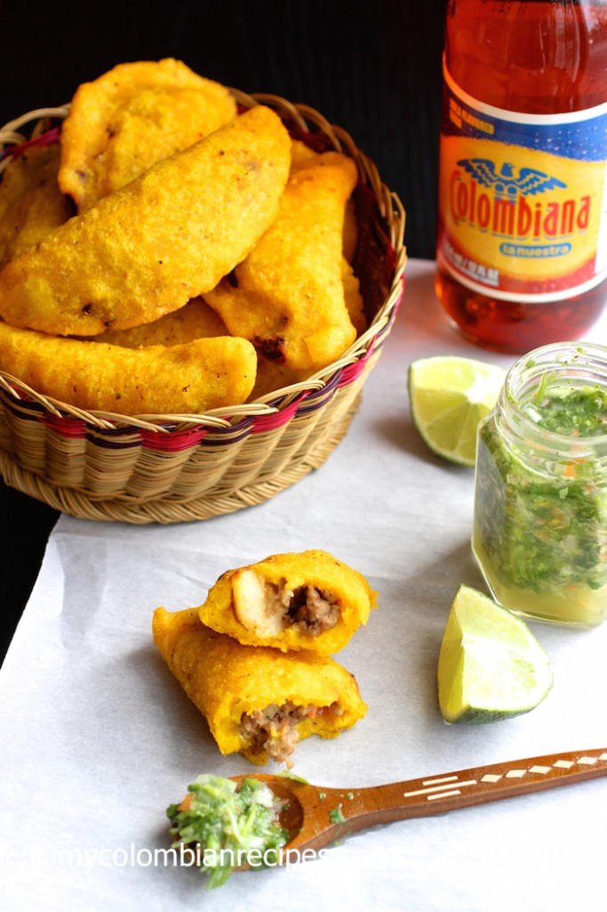

Colombian Empanadas

Description
Colombian Empanadas are a popular snack or appetizer in Colombia and are served by most Colombian restaurants in the United States with ají sauce.
Empanadas are popular in Spain and Latin America. Every country has an empanada recipe and even in Colombia we have different versions depending on the region and the cook.
Ingredients
- Ground or Shredded Beef
- Yellow Precooked Cornmeal
- Sazon with Azafran and Salt
- Fresh Cilantro or Parsley
- Potatoes
- White Onions
- Scallions
- Tomato
- Garlic
- Red Bell Pepper
Steps
- Cook the potatoes in a pot with water and the bouillon tablet for 20-25 minutes or until tender. Drain and gently mash the potatoes. Set aside.
- Heat 1 tablespoon olive oil in a large, heavy skillet. Add the onion and cook over medium-low heat stirring frequently, for 5 minutes. Add the tomatoes, green onions, garlic, bell pepper, cilantro, salt and black pepper. Cook for about 15 minutes.
- Add the ground pork and beef. Cook, breaking up the meat with a wooden spoon, for 10 to 15 minutes or until the mixture is fairly dry.
- Transfer the meat mixture to the mashed potatoes bowl and mix well to combine.
- Break small portions of the dough, about 1 ½ tablespoons each one, and form each portion into a ball by rolling between the palms of your hands.
- Place the balls of dough between two pieces of plastic and roll each out very thinly to form a circle. Remove the top plastic and place 1 tablespoon of the filling in the center of each.
- Then using the plastic underneath, fold the dough over to enclose the filling, forming a half circle. Tightly seal the edges by crimping with the tines of a fork.
- Fill a large pot with vegetable oil and heat over medium heat to 360° F.
- Carefully place 3 or 4 empanadas at the time in the heated oil and fry for about 2 minutes until golden on all sides.
- Using a slotted spoon transfer the empanadas to a plate lined with paper towels. Serve with ají and lime on the side.